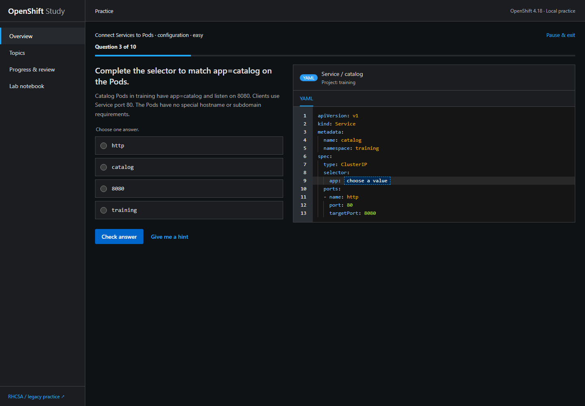

OpenShift & Linux
OpenShift Study
I built this workbench to practise OpenShift administration. Work through a guided lesson, troubleshoot a manifest, or mix questions across exam topics. Pick up your session later in the same browser.

Software development & machine learning
I’m a software development MSc graduate from Queen’s University Belfast. I build tools to explore data and practise the systems I’m learning.
OpenShift & Linux
I built this workbench to practise OpenShift administration. Work through a guided lesson, troubleshoot a manifest, or mix questions across exam topics. Pick up your session later in the same browser.

MSc dissertation
A Flask research application for exploring DNA methylation data and predicting tumour subtypes with a support vector machine.
Geospatial analysis
My first machine learning project. I combined crime records with ward boundaries and population data, then mapped geographic clusters using DBSCAN.
Text classification
I trained a Naive Bayes classifier on SMS messages and packaged it with Docker to learn how to run the model in a container.
Before my MSc dissertation, I used Northern Ireland crime data to teach myself clustering. For the dissertation, I applied machine learning to DNA methylation data. These days, I’m also working on OpenShift and Linux through hands-on study.
Find me on LinkedIn ↗